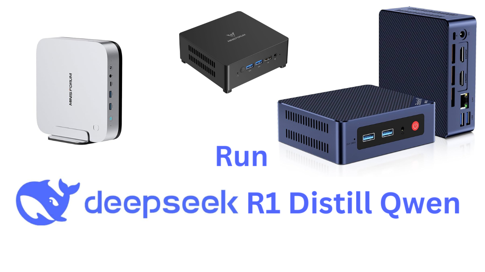

You have a gaming GPU with 16 GB of VRAM — an RTX 4060 Ti, an RTX 4080, an RTX 4070 Ti, or maybe an older RTX 3080 Ti. You have heard about DeepSeek R1, the open-source reasoning model that shocked the AI industry by matching OpenAI's o1 on benchmarks.
And now you want to run it locally. The good news: 16 GB of VRAM is enough.
The important nuance: you won't be running the full 671B parameter flagship model. That needs roughly 400 GB of VRAM across multiple data-center GPUs. What you will be running are the distilled versions — smaller models trained by the full R1 to reason the same way. And on 16 GB, two of these distilled models are extremely capable.
Here is the complete, practical guide to getting DeepSeek R1 running at its best on your 16 GB card.
First: What Are the Distilled Models?
There are six distilled versions available. They come in two flavours based on their base architecture:
- Qwen2.5-based: 1.5B, 7B, 14B, 32B — built on Alibaba's Qwen 2.5 base
- Llama 3-based: 8B, 70B — built on Meta's Llama 3 base (note: these carry the Llama 3 license in addition to MIT)
For a 16 GB VRAM GPU, two models are in play: the 14B (fits perfectly) and the 32B (fits with a trick). Understanding the difference is the entire point of this guide.
The VRAM Math: What Actually Fits?
To know what runs on your GPU, you need to understand how model size translates to VRAM usage. At full FP16/BF16 precision, each parameter takes 2 bytes. A 14B parameter model would need 28 GB — far too large. This is why quantization matters.
Quantization compresses each weight from 16-bit floating point numbers down to 4-bit integers. The model gets roughly 4× smaller with only a small quality loss. This is the Q4_K_M format you will see everywhere in GGUF files.
| Model | Precision | VRAM Required | Fits in 16 GB? | CPU Offload Needed? |
|---|---|---|---|---|
| R1-Distill-Qwen-7B | Q4_K_M | ~5 GB | ✅ Easily | ❌ None |
| R1-Distill-Qwen-14B | Q4_K_M | ~9 GB | ✅ Comfortably | ❌ None |
| R1-Distill-Qwen-14B | Q8_0 | ~15 GB | ✅ Just fits | ❌ None |
| R1-Distill-Qwen-32B | Q4_K_M | ~19–20 GB | ⚠️ Partial (4 GB spills to RAM) | ✅ ~4 GB to system RAM |
| R1-Distill-Qwen-32B | Q2_K | ~12–13 GB | ✅ Yes (quality trade-off) | ❌ None |
| R1-Distill-Llama-70B | Q4_K_M | ~43 GB | ❌ No | Heavy — impractical |
Which 16 GB GPU Should You Use?
Not all 16 GB cards are equal. The most critical spec for LLM inference is memory bandwidth — how fast data moves between the VRAM and the GPU cores. Every token generated requires loading the model weights from memory. Faster bandwidth = more tokens per second. Raw compute (TFLOPS) matters far less for inference than for training.
NVIDIA RTX 5060 Ti 16 GB
The top value pick for local LLM inference on 16 GB in 2026. Its GDDR7 memory offers dramatically higher bandwidth than the RTX 4060 Ti's GDDR6, translating directly into faster token generation speeds.
Why for DeepSeek R1? The GDDR7 bandwidth improvement over the 4060 Ti is the biggest generational leap in a mid-range card in years. For inference-heavy tasks like R1's long chain-of-thought outputs, this bandwidth directly improves responsiveness. The best new card to buy for 16 GB local AI in 2026.
NVIDIA RTX 4070 Ti 16 GB / RTX 4080 16 GB
Both cards carry 16 GB of GDDR6X — a fast memory type that outperforms standard GDDR6 significantly. If you already own one of these, or find them used, they are excellent for running the 14B model with headroom to spare. The RTX 4080 in particular, with its wider 256-bit bus, offers near-RTX 4090 performance for inference tasks.
Why for DeepSeek R1? If you already own one of these for gaming, you have an excellent inference machine. The RTX 4080's 716 GB/s bandwidth makes it one of the fastest 16 GB cards ever made for token generation — faster than many 24 GB cards for single-user inference on the 14B model.
NVIDIA RTX 4060 Ti 16 GB
A complicated card. It has the right VRAM amount but a critically narrow 128-bit memory bus — giving it only ~288 GB/s of bandwidth. This is actually lower than the older RTX 3060 (which has 192 GB/s on a 192-bit bus). Real-world benchmarks show it hitting only ~34 tokens/sec on the 14B model. It works, but you will feel the bottleneck. The RTX 5060 Ti replaces it decisively.
Why for DeepSeek R1? It runs the 14B model fine and the reasoning quality is identical to any other card — model quality depends on the weights, not the GPU. But you will notice slower token output, especially during long chain-of-thought reasoning blocks. Still usable for daily coding assistance.
Full GPU Comparison: R1-Distill-14B (Q4_K_M)
| GPU | VRAM | Bandwidth | 14B Q4 Speed | 32B Offload? | Price (approx) |
|---|---|---|---|---|---|
| RTX 5060 Ti | 16 GB GDDR7 | ~448 GB/s | ~45–55 t/s | ⚠️ Partial | ~$430 new |
| RTX 4080 | 16 GB GDDR6X | ~716 GB/s | ~55–65 t/s | ⚠️ Partial | ~$700–800 used |
| RTX 4070 Ti | 16 GB GDDR6X | ~504 GB/s | ~40–50 t/s | ⚠️ Partial | ~$500–600 used |
| RTX 4060 Ti | 16 GB GDDR6 | ~288 GB/s | ~30–38 t/s | ⚠️ Partial | ~$380–420 |
| RTX 3080 Ti | 12 GB GDDR6X | ~912 GB/s | ~50–58 t/s (7B full GPU) | ❌ Not 14B fully | ~$400–500 used |
*Token speeds are approximate for single-user inference via Ollama at Q4_K_M quantization. Results vary by system RAM speed, context length, and OS overhead.
Step-by-Step Setup: Ollama on Windows & Linux
Step 1 — Install Ollama
Ollama is a free, open-source model server that handles everything: downloading models, managing GPU offloading, and exposing a local API. One command installs it on Linux:
On Windows with an NVIDIA GPU, Ollama auto-detects CUDA. On Linux, ensure your NVIDIA driver is version 525 or newer before installing.
Step 2 — Pull the Right Model
For a 16 GB VRAM GPU, pull the 14B model as your primary. Optionally pull the 32B if you have 32+ GB of system RAM for partial offloading:
Step 3 — Create a Tuned Modelfile
Ollama's default settings are conservative. Creating a Modelfile unlocks the proper context window and temperature for R1's reasoning behaviour. Create a file called Modelfile-r1-14b with this content:
Now build and run the custom model:
Step 4 — Verify GPU Is Being Used
This is the most important check. While a model is loaded, open a second terminal and run:
Step 5 — Install Open WebUI for a Browser Interface
The command line works, but a browser UI is far better for long coding sessions. Open WebUI gives you a ChatGPT-style interface connected directly to your local Ollama server:
Select your r1-14b-tuned model from the dropdown. You now have a private, local ChatGPT that runs entirely on your GPU.
The 32B Stretch: CPU Offloading on 16 GB
The 32B model at Q4_K_M is roughly 19–20 GB — about 4 GB too large to fit entirely on a 16 GB card. But it can still run using CPU offloading: the layers that don't fit spill into system RAM. Here is what you need to know:
Create a separate Modelfile for the 32B with a reduced context window to minimize VRAM pressure:
When is it worth tolerating 10 t/s for the 32B model? When you need genuinely stronger reasoning on a hard problem — complex algorithm design, multi-step debugging, competitive programming. The 32B distill's reasoning quality is notably better than 14B on problems where the 14B "loses track" of intermediate steps. Use it on demand, not as your daily driver.
Understanding the <think> Blocks
The first time you run a DeepSeek R1 model, you will see something unusual — a wall of text between <think> and </think> tags before the final answer. This is not a bug.
This is the model's chain-of-thought reasoning scratchpad. R1 was trained through reinforcement learning to think step-by-step before committing to a final answer. The <think> block is the model's internal monologue — working through the problem, considering alternatives, catching its own errors, and arriving at a confident conclusion.
For coding tasks, this reasoning block is extremely valuable. You can watch the model trace through a bug, explore multiple fix approaches, and explain why it rejected the first two before settling on the correct solution.
<think> blocks by default, showing only the final answer but expanding the reasoning on demand. This keeps the UI clean while preserving access to the full reasoning trace when you need it.
Context Window: How Much Can You Hold in Mind?
The context window is how much text — your prompt plus the model's response — the model can hold at once. DeepSeek R1 distilled models support up to 128,000 tokens natively, but your VRAM limits how much of that you can use in practice.
On a 16 GB card with the 14B Q4_K_M model (~9 GB used), you have roughly 7 GB free for the KV cache. Here is what that translates to:
| Context Setting (num_ctx) | Approx. KV Cache VRAM Used | VRAM Remaining After 14B Model | Fits on 16 GB? |
|---|---|---|---|
| 4,096 tokens | ~0.5 GB | ~6.5 GB free | ✅ Easily |
| 8,192 tokens | ~1 GB | ~6 GB free | ✅ Recommended minimum for R1 |
| 16,384 tokens | ~2 GB | ~5 GB free | ✅ Sweet spot for coding sessions |
| 32,768 tokens | ~4 GB | ~3 GB free | ✅ Long codebase analysis |
| 65,536 tokens | ~8 GB | ⚠️ Overflows — layers offload to RAM | ⚠️ Slower |
num_ctx 16384 as your default. This is enough to hold a long coding conversation, a full function file, and R1's extended reasoning blocks simultaneously. Only increase to 32K when you specifically need to paste in a large file for analysis.
Quantization Levels Explained
You will see different quantization formats when browsing models. Here is what they mean for the 14B model on 16 GB VRAM:
| Quantization | VRAM (14B) | Quality vs FP16 | Recommendation |
|---|---|---|---|
| Q4_K_M | ~9 GB | ~97% of FP16 quality | ✅ Best choice for most users |
| Q5_K_M | ~10.5 GB | ~98.5% of FP16 quality | ✅ Slightly better — fits with margin |
| Q8_0 | ~15 GB | ~99.5% of FP16 quality | ⚠️ Fits — but tiny KV cache headroom |
| FP16 (full) | ~28 GB | 100% (reference quality) | ❌ Does not fit on 16 GB |
The practical verdict: Q4_K_M is the right choice for the 14B model on 16 GB. The difference between Q4_K_M and Q8_0 in real-world reasoning tasks is negligible — you will not notice it in coding output quality. But Q8_0 costs 6 GB more VRAM, drastically shrinking your available context window.
Quick Performance Test: Verify Your Setup
Once running, paste this prompt to verify the chain-of-thought reasoning is working correctly:
You should see a <think> block where the model traces the pointer reassignments node by node, then a clean final answer with the code. If you only get the code with no reasoning block, your model tag may have pulled the base Qwen model rather than the R1 distilled version — verify with ollama show deepseek-r1:14b and confirm it says "distill" in the model card.
People Also Ask (FAQ)
Common questions about running DeepSeek R1 distilled models on 16 GB VRAM GPUs.
Which DeepSeek R1 distill model should I run on a 16 GB VRAM GPU?
+The R1-Distill-Qwen-14B at Q4_K_M quantization is the sweet spot. It uses roughly 9 GB of VRAM, leaving generous headroom for the KV cache and OS overhead. This means it runs entirely on the GPU with no CPU offloading, giving you 30–60 tokens per second depending on your specific card's memory bandwidth.
Can I run DeepSeek R1 Distill 32B on a 16 GB VRAM GPU?
+Yes, but with a trade-off. The 32B model at Q4_K_M quantization is roughly 19–20 GB, so about 4 GB of layers must offload to system RAM. You need at least 32 GB of system RAM alongside the GPU. Expect a speed drop to around 8–14 tokens per second due to the PCIe bus bottleneck between the GPU and RAM. Use it for demanding reasoning tasks where 14B isn't cutting it, rather than as your everyday model.
What is the best 16 GB VRAM GPU for DeepSeek R1 in 2026?
+For a new purchase, the RTX 5060 Ti 16 GB is the top value pick at around $430, thanks to its GDDR7 memory bandwidth improvements over previous generations. On the used market, the RTX 4080 16 GB offers exceptional inference speed at its bandwidth of ~716 GB/s, though it costs more. The RTX 4060 Ti 16 GB works but is bottlenecked by its narrow 128-bit memory bus — its bandwidth is actually lower than many older cards, making it a poor value specifically for LLM inference.
Why does my DeepSeek R1 generate a thinking block before answering?
+This is intentional and is the core feature of R1 models. The text inside the <think>...</think> tags is the model's chain-of-thought reasoning scratchpad — it is working through the problem step by step before committing to an answer. These tags represent the model's actual reasoning process and are a big reason why R1 distilled models outperform comparably-sized general models on hard problems. You can hide these tags in the Open WebUI settings, but they remain available to expand on demand.
Want a follow-up guide on connecting DeepSeek R1 to Continue.dev as a local VS Code Copilot replacement? Let us know in the comments below!
Final Summary
A 16 GB VRAM GPU is genuinely capable hardware for local AI in 2026. Here is the quick reference:
- Your daily driver model:
deepseek-r1:14b-distill-qwen-q4_K_M— runs fully on GPU, 30–65 t/s depending on your card, excellent reasoning quality. - Your stretch model:
deepseek-r1:32bwith reduced context — partially offloaded, ~10 t/s, noticeably stronger reasoning for hard problems. Requires 32 GB+ system RAM. - Quantization choice: Q4_K_M for best balance. Q5_K_M if you want a slight quality bump and still have VRAM headroom.
- Context window: Set
num_ctx 16384as default. Reduce to 8192 if you notice slowdowns or VRAM warnings. - Temperature: Use 0.6 — DeepSeek's own recommendation for reasoning tasks. Lower for deterministic code generation.
- Best card for new buyers: RTX 5060 Ti 16 GB at ~$430. Best value on used market: RTX 4080 16 GB if budget allows.